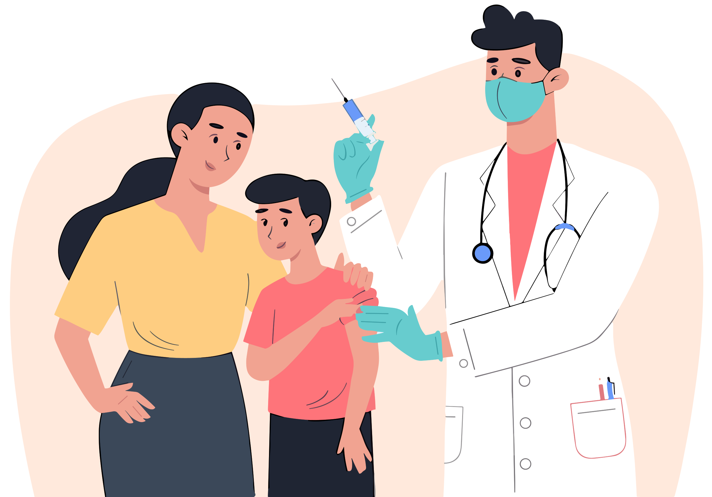

En Su IPS nos preocupamos por su
salud, por eso ponemos a su disposición una variada oferta de
programas orientados a la prevención y tratamiento de enfermedades.

Conoce nuestros servicios
La medicina general se centra en proporcionar atención médica
integral. Los médicos generales, conocidos como médicos de
cabecera o médicos de familia, son tus primeros puntos de contacto
en el sistema de atención médica. Ofrecen chequeos regulares,
asesoramiento sobre salud y, si es necesario, te refieren a
especialistas para un tratamiento más específico.
Los enfermeros y enfermeras son pilares de la atención médica.
Proporcionan cuidados directos, administran tratamientos médicos y
brindan apoyo a los pacientes. Su compromiso con el bienestar de
los pacientes es fundamental en la recuperación y el mantenimiento
de la salud.
La odontología general se dedica al cuidado integral de la salud
bucal. Los dentistas generales son expertos en la prevención y el
tratamiento de problemas dentales y bucales. Realizan limpiezas,
tratamientos restaurativos y se aseguran de que tu sonrisa esté en
su mejor estado.
Los laboratorios clínicos son centros de diagnóstico
fundamentales. Realizan análisis de muestras biológicas para
ayudar a los médicos a entender las condiciones de salud de los
pacientes. Estos resultados son esenciales para tomar decisiones
médicas informadas.
Los psicólogos son expertos en la mente y el comportamiento
humano. Ofrecen apoyo emocional y terapéutico a personas que
enfrentan dificultades emocionales o mentales. Su enfoque es
fundamental para la salud mental y el bienestar de los individuos.
Estos programas son estrategias vitales para detectar enfermedades
en sus etapas iniciales. Realizan pruebas médicas preventivas, lo
que aumenta las posibilidades de un tratamiento efectivo al
identificar problemas de salud antes de que se vuelvan graves.
Estos programas se dedican a prevenir enfermedades en grupos de
riesgo. Su objetivo es reducir la incidencia y el impacto de
enfermedades específicas a través de intervenciones dirigidas,
contribuyendo a una mejor salud en comunidades y poblaciones
específicas.